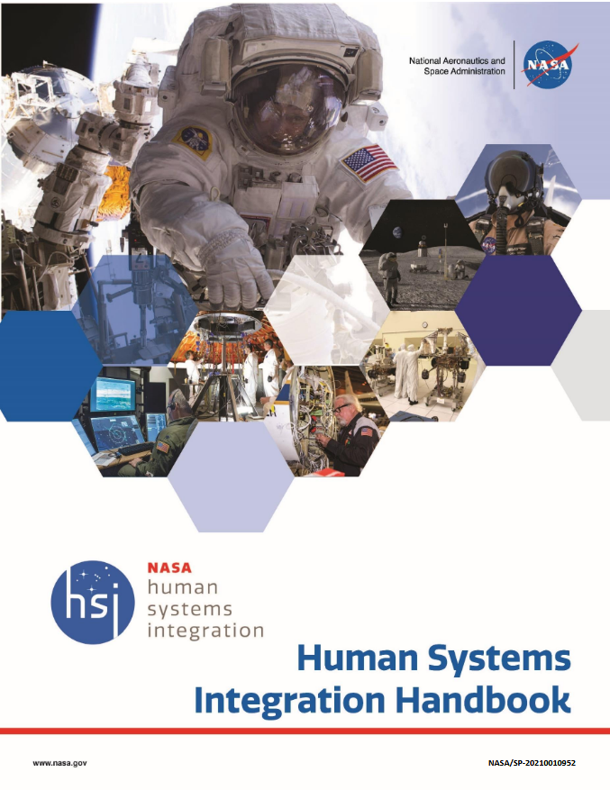
First half = main body
HSI Fundamentals
HSI Impacts
HSI Resources at NASA
HSI Implementation
Second half = appendices
HSI Plan
HSI in the Project Life Cycle
HSI in Safety
HSI Case Studies
HSI Tools
HSI Data Requirements
HSI (more) Resources
First half = main body
HSI Fundamentals
HSI Impacts
HSI Resources at NASA
HSI Implementation
Second half = appendices
HSI Plan
HSI in the Project Life Cycle
HSI in Safety
HSI Case Studies
HSI Tools
HSI Data Requirements
HSI (more) Resources
The goals of HSI is:
“To optimize total system performance through effective human integration with hardware and software while minimizing program costs and risks.”
“HSI (as a process) is a required interdisciplinary integration of the human as an element of a system to ensure that the human and software/hardware components cooperate, coordinate, and communicate effectively to successfully perform a specific function or mission.”
“The human in HSI refers to all personnel involved with a given system, including owners, users, customers, designers, operators, maintainers, assemblers, support personnel, logistics suppliers, training personnel, test personnel, and others”
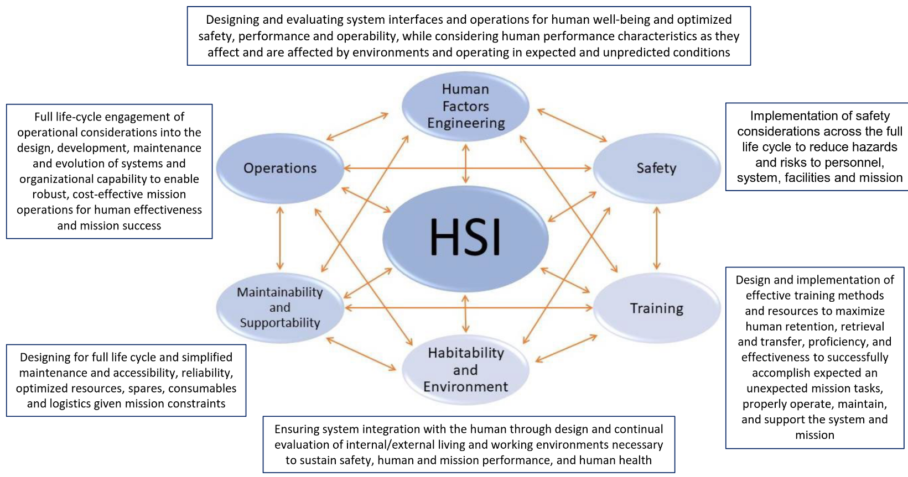
The six HSI Domains (for NASA)
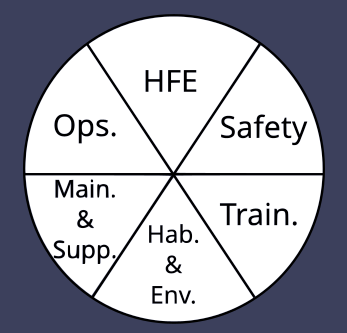
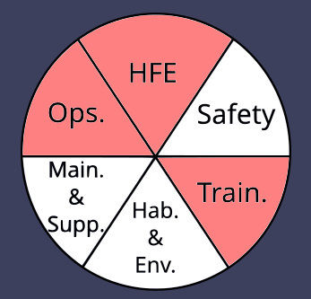
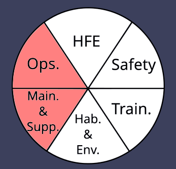
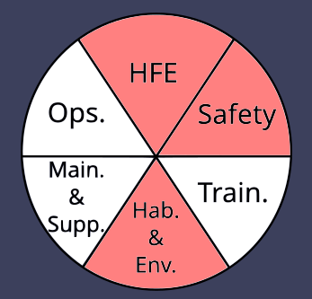
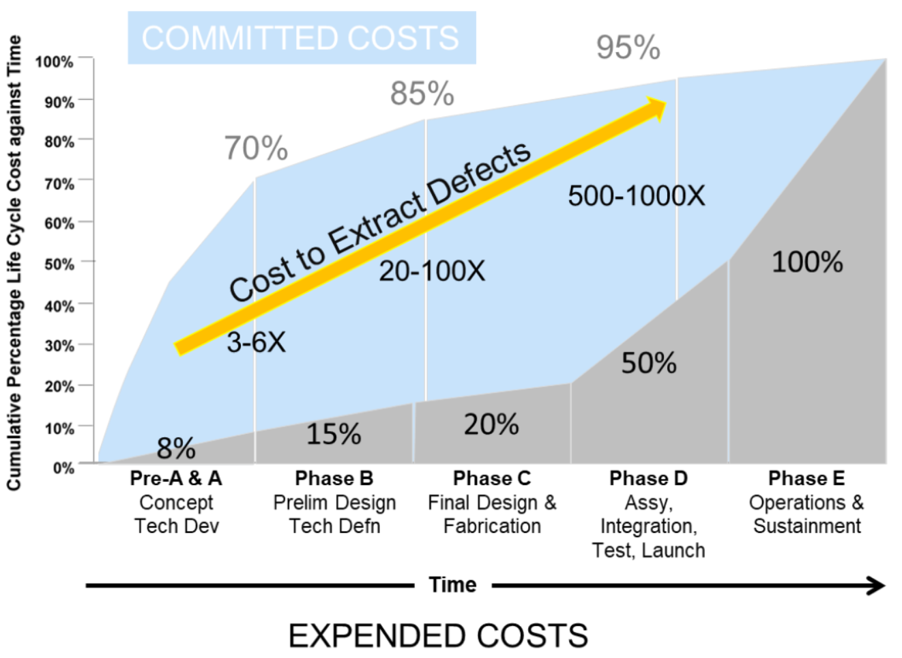
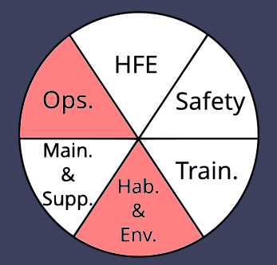
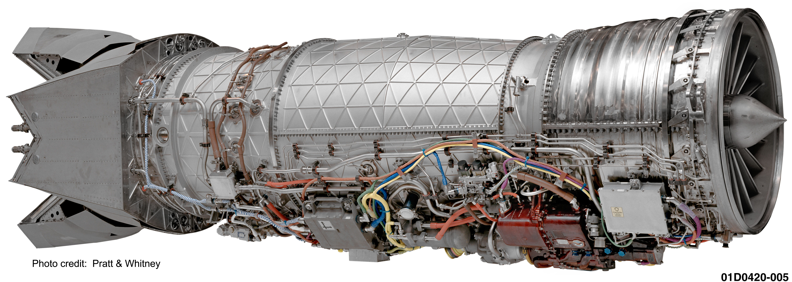
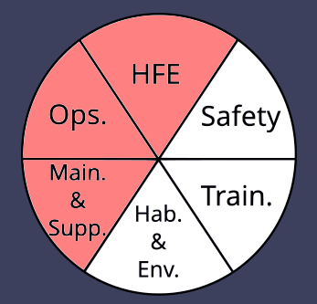
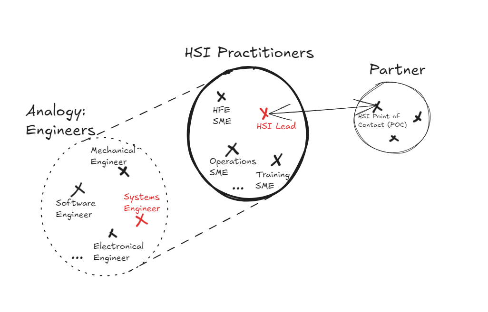
HSI Roles
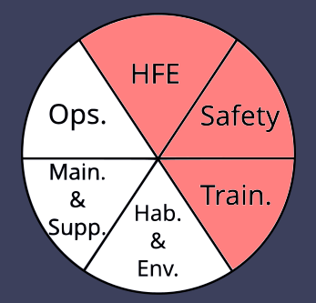
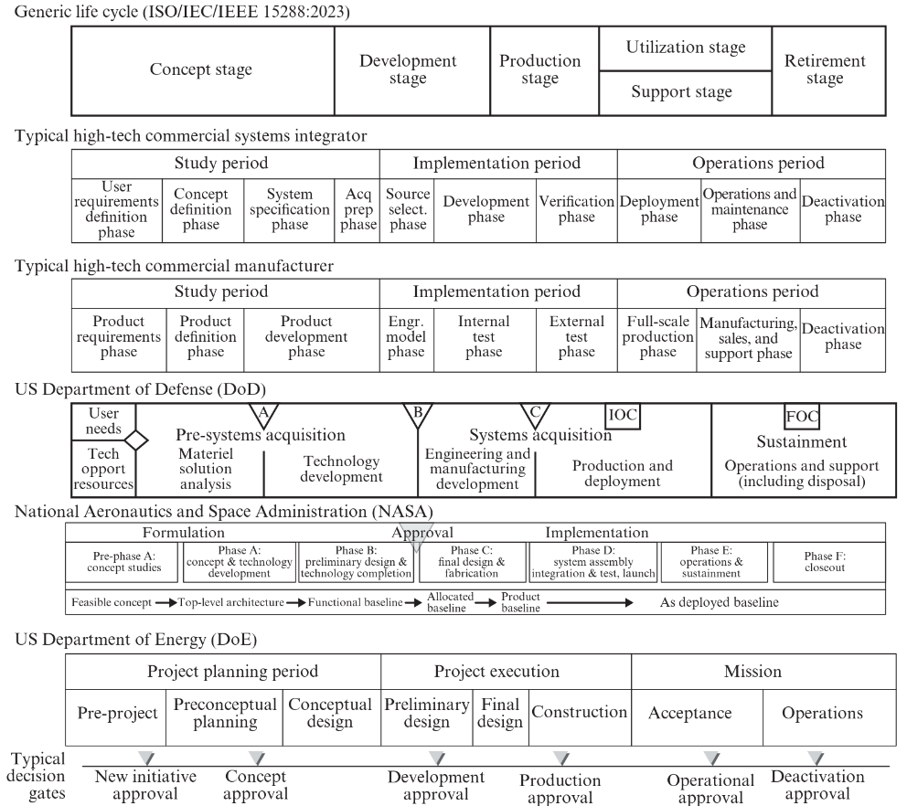
Project Life Cycle (from INCOSE HB)
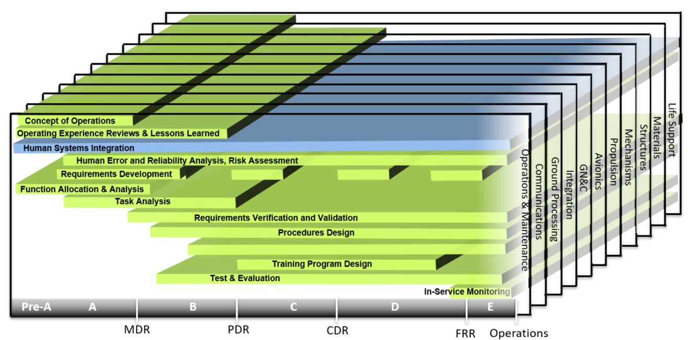
HSI Activities across Life Cycle
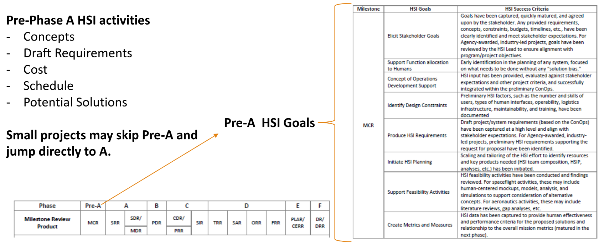
Pre-Phase A Activities (adapted from Ondrej Doule)
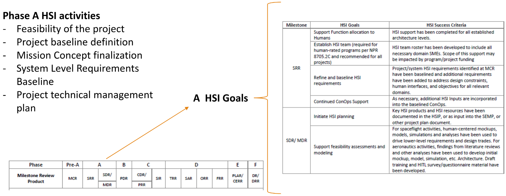
Phase A Activities (adapted from Ondrej Doule)
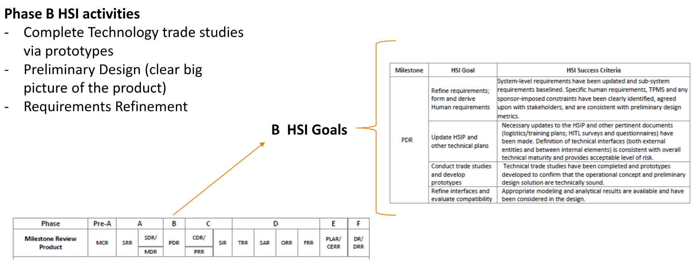
Phase B Activities (adapted from Ondrej Doule)
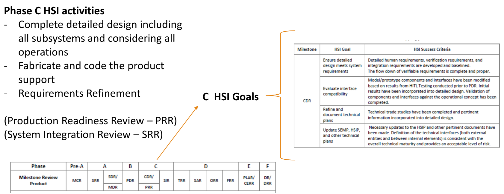
Phase C Activities (adapted from Ondrej Doule)
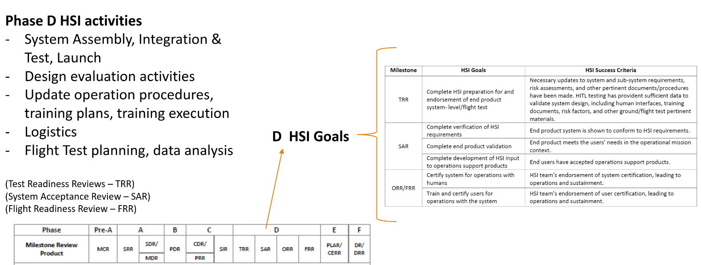
Phase D Activities (adapted from Ondrej Doule)
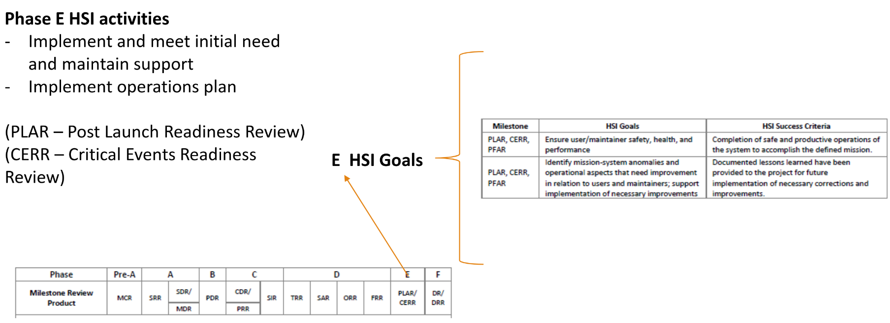
Phase E Activities (adapted from Ondrej Doule)
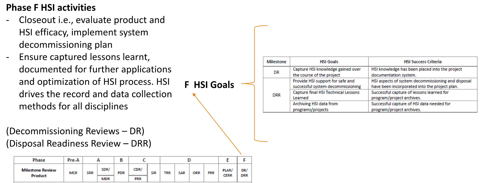
Phase F Activities (adapted from Ondrej Doule)
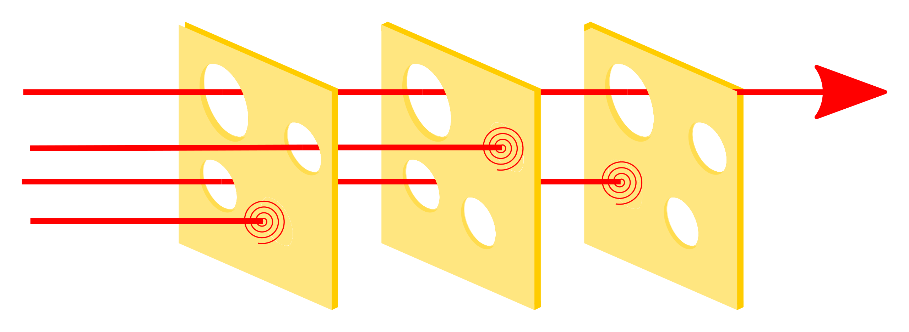
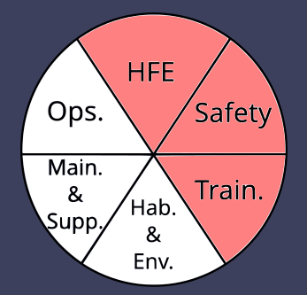
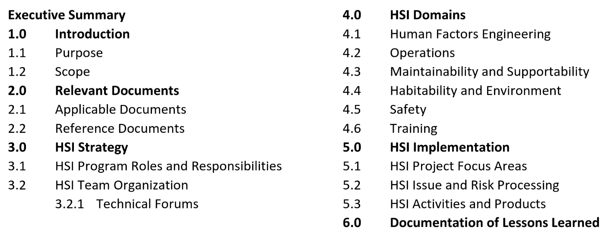
HSI Plan Outline
In this course, we will ask you to work on a lightweight version of the HSI Plan
NASA HSI Handbook & HSI Plan